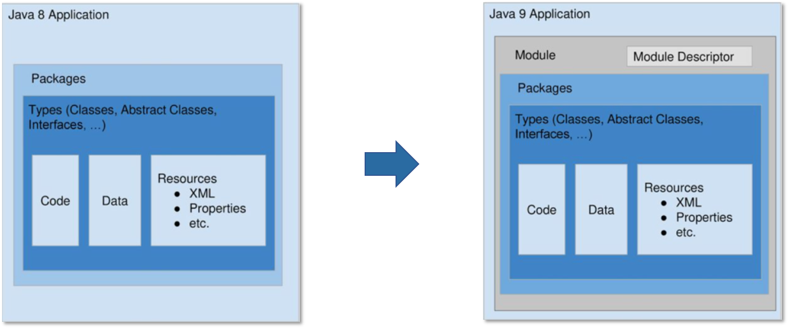
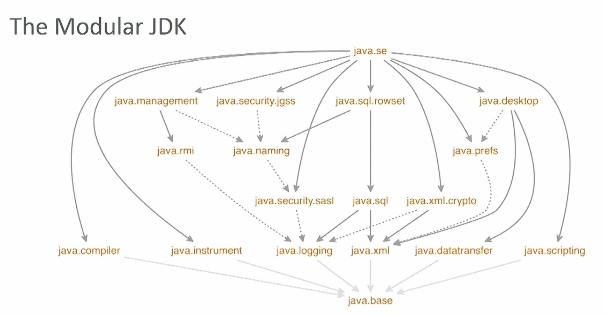
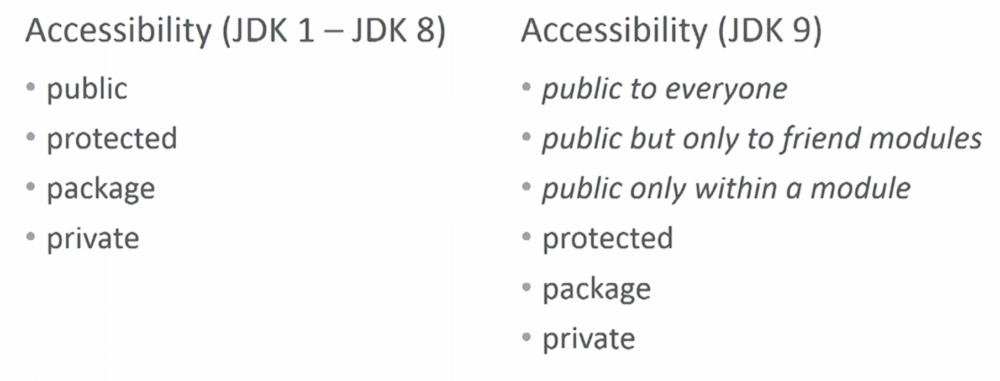
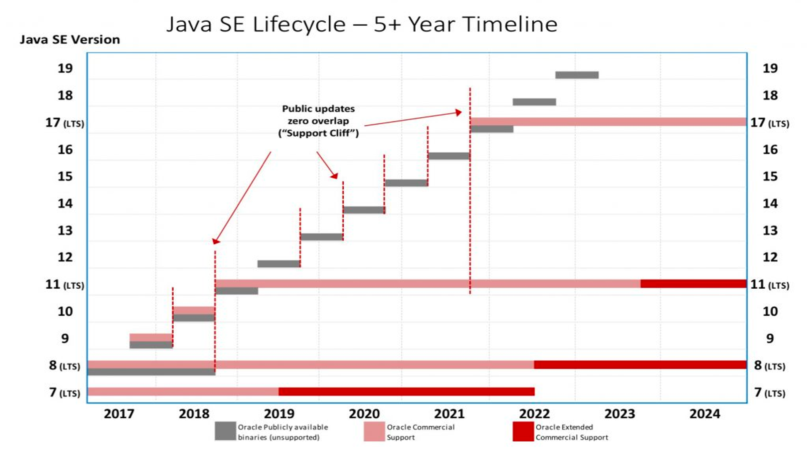
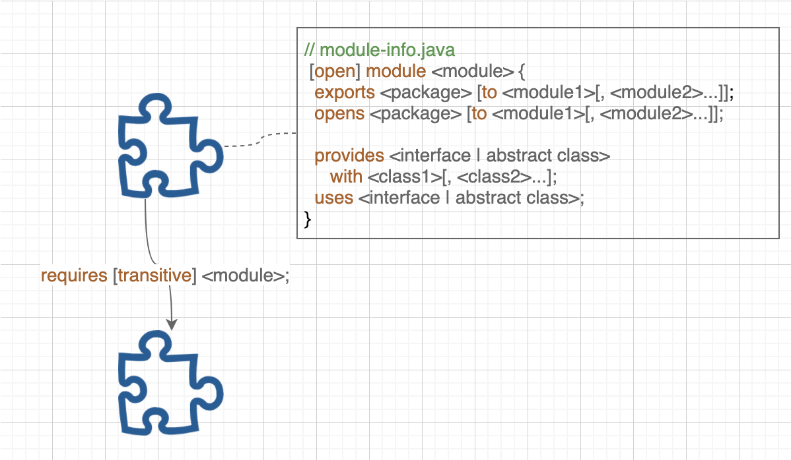
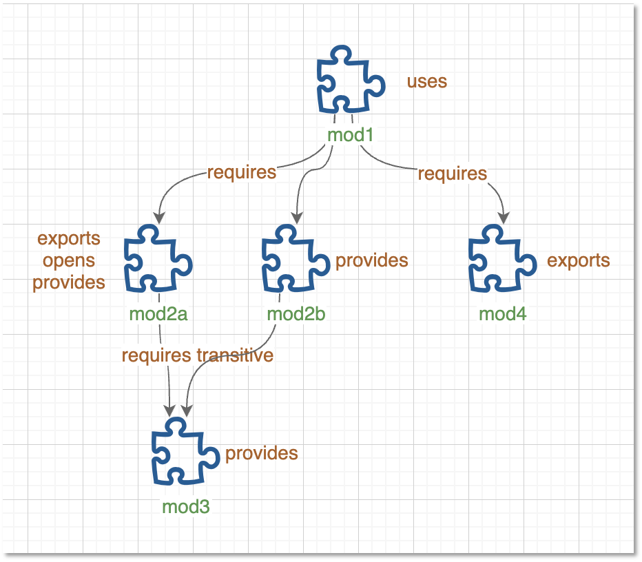
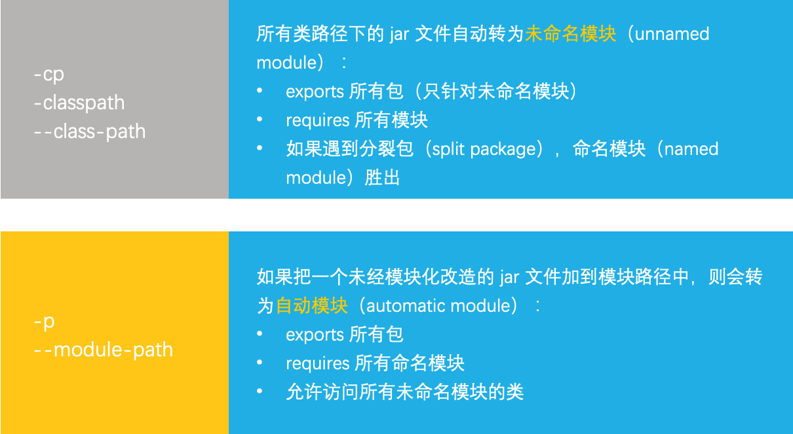
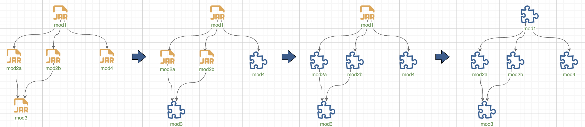
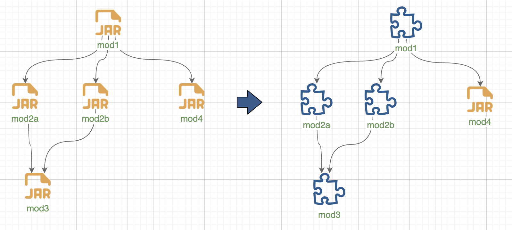

<!DOCTYPE HTML>
<html>
<head><meta name="generator" content="Hexo 3.9.0">
  <meta charset="utf-8">
  <meta http-equiv="X-UA-Compatible" content="IE=edge">
  <meta name="apple-mobile-web-app-capable" content="yes">
  <meta name="apple-mobile-web-app-status-bar-style" content="black">
  <meta name="google-site-verification" content>
  
  <title>【JDK 11】关于 Java 模块系统，看这一篇就够了</title>
  <meta name="author" content="Emac">
   <meta name="description" content="继 2014 年 3 月 Java 8 发布之后，时隔 4 年，2018 年 9 月，Java 11 如期发布，其间间隔了 Java 9 和 Java 10 两个非LTS（Long Term Support）版本。作为最新的LTS版本，相比 Java 8，Java 11 包含了模块系统、改用 G1 ">
  

  <meta property="og:title" content="【JDK 11】关于 Java 模块系统，看这一篇就够了">
  <meta name="viewport" content="width=device-width, initial-scale=1, maximum-scale=1">
  <meta property="og:site_name" content="Emac">
 <meta property="og:image" content="undefined">
  
  <link href="/apple-touch-icon-precomposed.png" sizes="180x180" rel="apple-touch-icon-precomposed">
  <link rel="alternate" href="/atom.xml" title="Emac" type="application/atom+xml">
  <link rel="stylesheet" href="//cdn.bootcss.com/bootstrap/3.3.6/css/bootstrap.min.css">
  <link rel="stylesheet" href="//cdn.bootcss.com/font-awesome/4.5.0/css/font-awesome.min.css">
  <link rel="stylesheet" href="/css/m.min.css">
  <link rel="icon" type="image/x-icon" href="/favicon.ico">
</head>
</html>
<body>
  <div id='wx_pic' style='display:none;'></div>
  <div id="main">
    <div class="behind">
      <div class="back">
        <a href="/" class="black-color"><i class="fa fa-times" aria-hidden="true"></i></a>
      </div>
      <div class="description">
        &nbsp;拾贝
      </div>
    </div>
    <div class="container">
      

  <article class="standard post">
    <div class="title">
      
  
    <h1 class="page-title center">
        【JDK 11】关于 Java 模块系统，看这一篇就够了
    </h1>
  


    </div>
    <div class="meta center">
      
<time datetime="2020-06-30T16:00:00.000Z">
  <i class="fa fa-calendar"></i>&nbsp;
  2020-07-01
</time>


    
    &nbsp;
    <i class="fa fa-tag"></i>&nbsp;
    <a href="/categories/coding/">coding</a>


    
    &nbsp;
    <i class="fa fa-tag"></i>&nbsp;
    <a href="/tags/原创/">原创</a>·<a href="/tags/Java/">Java</a>


    </div>
    <hr>
    <div class="picture-container">
      
    </div>
    <blockquote>
<p>继 2014 年 3 月 Java 8 发布之后，时隔 4 年，2018 年 9 月，Java 11 如期发布，其间间隔了 Java 9 和 Java 10 两个非LTS（Long Term Support）版本。作为最新的LTS版本，相比 Java 8，Java 11 包含了模块系统、改用 G1 作为默认 GC 算法、反应式流 Flow、新版 HttpClient 等诸多特性。作为 JDK 11 升级系列的第一篇，本文将介绍此次升级最重要的特性——模块系统。</p>
</blockquote>
<h2 id="1-模块系统简介"><a href="#1-模块系统简介" class="headerlink" title="1 模块系统简介"></a>1 模块系统简介</h2><p>如果把 Java 8 比作单体应用，那么引入模块系统之后，从 Java 9 开始，Java 就华丽的转身为微服务。模块系统，项目代号 <a href="http://openjdk.java.net/projects/jigsaw/" target="_blank" rel="noopener">Jigsaw</a>，最早于 2008 年 8 月提出（比 Martin Fowler <a href="http://martinfowler.com/articles/microservices.html" target="_blank" rel="noopener">提出</a>微服务还早 6 年），2014 年跟随 Java 9 正式进入开发阶段，最终跟随 Java 9 发布于 2017 年 9 月。</p>
<p>那么什么是模块系统？官方的<a href="https://www.oracle.com/corporate/features/understanding-java-9-modules.html" target="_blank" rel="noopener">定义</a>是<code>A uniquely named, reusable group of related packages, as well as resources (such as images and XML files) and a module descriptor.</code>如<em>图-1</em>所示，模块的载体是 jar 文件，一个模块就是一个 jar 文件，但相比于传统的 jar 文件，模块的根目录下多了一个 <code>module-info.class</code> 文件，也即 <code>module descriptor</code>。 <code>module descriptor</code> 包含以下信息：</p>
<ul>
<li>模块名称</li>
<li>依赖哪些模块</li>
<li>导出模块内的哪些包（允许直接 <code>import</code> 使用）</li>
<li>开放模块内的哪些包（允许通过 Java 反射访问）</li>
<li>提供哪些服务</li>
<li>依赖哪些服务</li>
</ul>
<p></p>
<p><em>图-1: Java 9 Module</em></p>
<p>也就是说，任意一个 jar 文件，只要加上一个合法的 <code>module descriptor</code>，就可以升级为一个模块。这个看似微小的改变，到底可以带来哪些好处？在我看来，至少带来四方面的好处。</p>
<p>第一，原生的依赖管理。有了模块系统，Java 可以根据 <code>module descriptor</code> 计算出各个模块间的依赖关系，一旦发现循环依赖，启动就会终止。同时，由于模块系统不允许不同模块导出相同的包（即 <code>split package</code>，分裂包），所以在查找包时，Java 可以精准的定位到一个模块，从而获得更好的性能。</p>
<p>第二，精简  JRE。引入模块系统之后，JDK 自身被划分为 94 个模块（参见<em>图-2</em>）。通过 Java 9 新增的 <code>jlink</code> 工具，开发者可以根据实际应用场景随意组合这些模块，去除不需要的模块，生成自定义 JRE，从而有效缩小 JRE 大小。得益于此，JRE 11 的大小仅为 JRE 8 的 53%，从 218.4 MB缩减为 116.3 MB，JRE 中广为诟病的巨型 jar 文件 <code>rt.jar</code> 也被移除。更小的 JRE 意味着更少的内存占用，这让 Java 对嵌入式应用开发变得更友好。</p>
<p></p>
<p><em>图-2: The Modular JDK</em></p>
<p>第三，更好的兼容性。自打 Java 出生以来，就只有 4 种包可见性，这让 Java 对面向对象的三大特征之一封装的支持大打折扣，类库维护者对此叫苦不迭，只能一遍又一遍的通过各种文档或者奇怪的命名来强调这些或者那些类仅供内部使用，擅自使用后果自负云云。Java 9 之后，利用 <code>module descriptor</code> 中的 <code>exports</code> 关键词，模块维护者就精准控制哪些类可以对外开放使用，哪些类只能内部使用，换句话说就是不再依赖文档，而是由编译器来保证。类可见性的细化，除了带来更好的兼容性，也带来了更好的安全性。</p>
<p></p>
<p><em>图-3: Java Accessibility</em></p>
<p>第四，提升 Java 语言开发效率。Java 9 之后，Java 像开挂了一般，一改原先一延再延的风格，严格遵循每半年一个大版本的发布策略，从 2017 年 9 月到 2020 年 3 月，从 Java 9 到 Java 14，三年时间相继发布了 6 个版本，无一延期，参见<em>图-4</em>。这无疑跟模块系统的引入有莫大关系。前文提到，Java 9 之后，JDK 被拆分为 94 个模块，每个模块有清晰的边界（<code>module descriptor</code>）和独立的单元测试，对于每个 Java 语言的开发者而言，每个人只需要关注其所负责的模块，开发效率因此大幅提升。这其中的差别，就好比单体应用架构升级到微服务架构一般，版本迭代速度不快也难。</p>
<p></p>
<p><em>图-4: Java SE Lifecycle</em></p>
<h2 id="2-基础篇"><a href="#2-基础篇" class="headerlink" title="2 基础篇"></a>2 基础篇</h2><h3 id="2-1-module-descriptor"><a href="#2-1-module-descriptor" class="headerlink" title="2.1 module descriptor"></a>2.1 module descriptor</h3><p>上面提到，模块的核心在于 <code>module descriptor</code>，对应根目录下的 <code>module-info.class</code> 文件，而这个 class 文件是由源代码根目录下的 <code>module-info.java</code> 编译生成。Java 为 <code>module-info.java</code> 设计了专用的语法，包含 <code>module</code>、 <code>requires</code>、<code>exports</code> 等多个关键词（参见<em>图-5</em>）。</p>
<p></p>
<p><em>图-5: module-info.java 语法</em></p>
<p>语法解读：</p>
<ul>
<li><code>[open] module &lt;module&gt;</code>: 声明一个模块，模块名称应全局唯一，不可重复。加上 <code>open</code> 关键词表示模块内的所有包都允许通过 Java 反射访问，模块声明体内不再允许使用 <code>opens</code> 语句。</li>
<li><code>requires [transitive] &lt;module&gt;</code>: 声明模块依赖，一次只能声明一个依赖，如果依赖多个模块，需要多次声明。加上 <code>transitive</code> 关键词表示传递依赖，比如模块 A 依赖模块 B，模块 B 传递依赖模块 C，那么模块 A 就会自动依赖模块 C，类似于 Maven。</li>
<li><code>exports &lt;package&gt; [to &lt;module1&gt;[, &lt;module2&gt;...]]</code>: 导出模块内的包（允许直接 <code>import</code> 使用），一次导出一个包，如果需要导出多个包，需要多次声明。如果需要定向导出，可以使用 <code>to</code> 关键词，后面加上模块列表（逗号分隔）。</li>
<li><code>opens &lt;package&gt; [to &lt;module&gt;[, &lt;module2&gt;...]]</code>: 开放模块内的包（允许通过 Java 反射访问），一次开放一个包，如果需要开放多个包，需要多次声明。如果需要定向开放，可以使用 <code>to</code> 关键词，后面加上模块列表（逗号分隔）。</li>
<li><code>provides &lt;interface | abstract class&gt; with &lt;class1&gt;[, &lt;class2&gt; ...]</code>: 声明模块提供的 Java SPI 服务，一次可以声明多个服务实现类（逗号分隔）。</li>
<li><code>uses &lt;interface | abstract class&gt;</code>: 声明模块依赖的 Java SPI 服务，加上之后模块内的代码就可以通过 <code>ServiceLoader.load(Class)</code> 一次性加载所声明的 SPI 服务的所有实现类。</li>
</ul>
<h3 id="2-2-p-amp-m-参数"><a href="#2-2-p-amp-m-参数" class="headerlink" title="2.2 -p &amp; -m 参数"></a>2.2 -p &amp; -m 参数</h3><p>Java 9 引入了一系列新的参数用于编译和运行模块，其中最重要的两个参数是 <code>-p</code> 和 <code>-m</code>。<code>-p</code> 参数指定模块路径，多个模块之间用 “:”（Mac, Linux）或者 “;”（Windows）分隔，同时适用于 <code>javac</code> 命令和 <code>java</code> 命令，用法和Java 8 中的 <code>-cp</code> 非常类似。<code>-m</code> 参数指定待运行的模块主函数，输入格式为<code>模块名/主函数所在的类名</code>，仅适用于 <code>java</code> 命令。两个参数的基本用法如下：</p>
<ul>
<li><p><code>javac -p &lt;module_path&gt; &lt;source&gt;</code></p>
</li>
<li><p><code>java -p &lt;module_path&gt; -m &lt;module&gt;/&lt;main_class&gt;</code></p>
</li>
</ul>
<h3 id="2-3-Demo-示例"><a href="#2-3-Demo-示例" class="headerlink" title="2.3 Demo 示例"></a>2.3 Demo 示例</h3><p>为了帮助你理解 <code>module descriptor</code> 语法和新的 Java 参数，我专门设计了一个<a href="https://github.com/emac/jmods-demo" target="_blank" rel="noopener">示例工程</a>，其内包含了 5 个模块：</p>
<ul>
<li>mod1 模块: 主模块，展示了使用服务实现类的两种方式。</li>
<li>mod2a 模块: 分别导出和开放了一个包，并声明了两个服务实现类。</li>
<li>mod2b 模块: 声明了一个未公开的服务实现类。</li>
<li>mod3 模块: 定义 SPI 服务（<code>IEventListener</code>），并声明了一个未公开的服务实现类。</li>
<li>mod4 模块: 导出公共模型类。</li>
</ul>
<p></p>
<p><em>图-6: 包含 5 个模块的示例工程</em></p>
<p>先来看一下主函数，方式 1 展示了直接使用 mod2 导出和开放的两个 <code>IEventListener</code> 实现类，方式 2 展示了通过 Java SPI 机制使用所有的 <code>IEventListener</code> 实现类，无视其导出/开放与否。方式 2 相比 方式 1，多了两行输出，分别来自于 mod2b 和 mod3 通过 <code>provides</code> 关键词提供的服务实现类。</p>
<figure class="highlight java"><table><tr><td class="gutter"><pre><span class="line">1</span><br><span class="line">2</span><br><span class="line">3</span><br><span class="line">4</span><br><span class="line">5</span><br><span class="line">6</span><br><span class="line">7</span><br><span class="line">8</span><br><span class="line">9</span><br><span class="line">10</span><br><span class="line">11</span><br><span class="line">12</span><br><span class="line">13</span><br><span class="line">14</span><br><span class="line">15</span><br><span class="line">16</span><br><span class="line">17</span><br><span class="line">18</span><br><span class="line">19</span><br><span class="line">20</span><br><span class="line">21</span><br><span class="line">22</span><br><span class="line">23</span><br><span class="line">24</span><br><span class="line">25</span><br></pre></td><td class="code"><pre><span class="line"><span class="keyword">public</span> <span class="class"><span class="keyword">class</span> <span class="title">EventCenter</span> </span>&#123;</span><br><span class="line"></span><br><span class="line">    <span class="function"><span class="keyword">public</span> <span class="keyword">static</span> <span class="keyword">void</span> <span class="title">main</span><span class="params">(String[] args)</span> <span class="keyword">throws</span> ReflectiveOperationException </span>&#123;</span><br><span class="line">        <span class="comment">// 方式1：通过exports和opens</span></span><br><span class="line">        System.out.println(<span class="string">"Demo: Direct Mode"</span>);</span><br><span class="line">        <span class="keyword">var</span> listeners = <span class="keyword">new</span> ArrayList&lt;IEventListener&gt;();</span><br><span class="line">        <span class="comment">// 使用导出类</span></span><br><span class="line">        listeners.add(<span class="keyword">new</span> EchoListener());</span><br><span class="line">        <span class="comment">// 使用开放类</span></span><br><span class="line">        <span class="comment">// compile error: listeners.add(new ReflectEchoListener());</span></span><br><span class="line">        listeners.add((IEventListener&lt;String&gt;) Class.forName(<span class="string">"mod2a.opens.ReflectEchoListener"</span>).getDeclaredConstructor().newInstance());</span><br><span class="line">        <span class="keyword">var</span> event = Events.newEvent();</span><br><span class="line">        listeners.forEach(l -&gt; l.onEvent(event));</span><br><span class="line">        System.out.println();</span><br><span class="line"></span><br><span class="line">        <span class="comment">// 方式2：通过SPI</span></span><br><span class="line">        System.out.println(<span class="string">"Demo: SPI Mode"</span>);</span><br><span class="line">        <span class="comment">// 加载所有的IEventListener实现类，无视其导出/开放与否</span></span><br><span class="line">        var listeners2 = ServiceLoader.load(IEventListener.class).stream().map(ServiceLoader.Provider::get).collect(Collectors.toList());</span><br><span class="line">        <span class="comment">// compile error: listeners.add(new InternalEchoListener());</span></span><br><span class="line">        <span class="comment">// compile error: listeners.add(new SpiEchoListener());</span></span><br><span class="line">        <span class="keyword">var</span> event2 = Events.newEvent();</span><br><span class="line">        listeners2.forEach(l -&gt; l.onEvent(event2));</span><br><span class="line">    &#125;</span><br><span class="line">&#125;</span><br></pre></td></tr></table></figure>
<p><em>代码-1: mod1.EventCenter.java</em></p>
<p>命令行下执行<code>./build_mods.sh</code>，得到输出如下，结果和预期一致。</p>
<figure class="highlight java"><table><tr><td class="gutter"><pre><span class="line">1</span><br><span class="line">2</span><br><span class="line">3</span><br><span class="line">4</span><br><span class="line">5</span><br><span class="line">6</span><br><span class="line">7</span><br><span class="line">8</span><br><span class="line">9</span><br></pre></td><td class="code"><pre><span class="line">Demo: Direct Mode</span><br><span class="line">[echo] Event received: <span class="number">68</span>eb4671-c057-<span class="number">4</span>bc2-<span class="number">9653</span>-c31f5e3f72d2</span><br><span class="line">[reflect echo] Event received: <span class="number">68</span>eb4671-c057-<span class="number">4</span>bc2-<span class="number">9653</span>-c31f5e3f72d2</span><br><span class="line"></span><br><span class="line">Demo: SPI Mode</span><br><span class="line">[spi echo] Event received: <span class="number">678</span>d239a-<span class="number">77</span>ef-<span class="number">4</span>b7f-b7aa-e76041fcdf47</span><br><span class="line">[echo] Event received: <span class="number">678</span>d239a-<span class="number">77</span>ef-<span class="number">4</span>b7f-b7aa-e76041fcdf47</span><br><span class="line">[reflect echo] Event received: <span class="number">678</span>d239a-<span class="number">77</span>ef-<span class="number">4</span>b7f-b7aa-e76041fcdf47</span><br><span class="line">[internal echo] Event received: <span class="number">678</span>d239a-<span class="number">77</span>ef-<span class="number">4</span>b7f-b7aa-e76041fcdf47</span><br></pre></td></tr></table></figure>
<p><em>代码-2: EventCenter 结果输出</em></p>
<h2 id="3-进阶篇"><a href="#3-进阶篇" class="headerlink" title="3 进阶篇"></a>3 进阶篇</h2><p>看到这里，相信创建和运行一个新的模块应用对你而言已经不是问题了，可问题是老的 Java 8 应用怎么办？别着急，我们先来了解两个高级概念，未命名模块（unnamed module）和自动模块（automatic module）。</p>
<p></p>
<p><em>图-7: 未命名模块 vs 自动模块</em></p>
<p>一个未经模块化改造的 jar 文件是转为未命名模块还是自动模块，取决于这个 jar 文件出现的路径，如果是类路径，那么就会转为未命名模块，如果是模块路径，那么就会转为自动模块。注意，自动模块也属于命名模块的范畴，其名称是模块系统基于 jar 文件名自动推导得出的，比如 com.foo.bar-1.0.0.jar 文件推导得出的自动模块名是 com.foo.bar。<em>图-7</em>列举了未命名模块和自动模块行为上的区别，除此之外，两者还有一个关键区别，分裂包规则适用于自动模块，但对未命名模块无效，也即多个未命名模块可以导出同一个包，但自动模块不允许。</p>
<p>未命名模块和自动模块存在的意义在于，无论传入的 jar 文件是否一个合法的模块（包含 <code>module descriptor</code>），Java 内部都可以统一的以模块的方式进行处理，这也是 Java 9 兼容老版本应用的架构原理。运行老版本应用时，所有 jar 文件都出现在类路径下，也就是转为未命名模块，对于未命名模块而言，默认导出所有包并且依赖所有模块，因此应用可以正常运行。进一步的解读可以参阅<a href="http://openjdk.java.net/projects/jigsaw/spec/sotms/" target="_blank" rel="noopener">官方白皮书</a>的相关章节。</p>
<p>基于未命名模块和自动模块，相应的就产生了两种老版本应用的迁移策略，或者说模块化策略。</p>
<h3 id="3-1-Bottom-up-自底向上策略"><a href="#3-1-Bottom-up-自底向上策略" class="headerlink" title="3.1 Bottom-up 自底向上策略"></a>3.1 Bottom-up 自底向上策略</h3><p>第一种策略，叫做自底向上（bottom-up）策略，即根据 jar 包依赖关系（如果依赖关系比较复杂，可以使用 <code>jdeps</code> 工具进行分析），沿着依赖树自底向上对 jar 包进行模块化改造（在 jar 包的源代码根目录下添加合法的模块描述文件 <code>module-info.java</code>）。初始时，所有 jar 包都是非模块化的，全部置于类路径下（转为未命名模块），应用以传统方式启动。然后，开始自底向上对 jar 包进行模块化改造，改造完的 jar 包就移到模块路径下，这期间应用仍以传统方式启动。最后，等所有 jar 包都完成模块化改造，应用改为 <code>-m</code> 方式启动，这也标志着应用已经迁移为真正的 Java 9 应用。以上面的示例工程为例，</p>
<p></p>
<p><em>图-8: Bottom-up模块化策略</em></p>
<p>1) 假设初始时，所有 jar 包都是非模块化的，此时应用运行命令为：</p>
<p><code>java -cp mod1.jar:mod2a.jar:mod2b.jar:mod3.jar:mod4.jar mod1.EventCenter</code></p>
<p>2) 对 mod3 和 mod4 进行模块化改造。完成之后，此时 mod1, mod2a, mod2b 还是普通的 jar 文件，新的运行命令为：</p>
<p><code>java -cp mod1.jar:mod2a.jar:mod2b.jar -p mod3.jar:mod4.jar --add-modules mod3,mod4 mod1.EventCenter</code></p>
<p>对比上一步的命令，首先 mod3.jar 和 mod4.jar 从类路径移到了模块路径，这个很好理解，因为这两个 jar 包已经改造成了真正的模块。其次，多了一个额外的参数 <code>--add-modules mod3,mod4</code>，这是为什么呢？这就要谈到模块系统的模块发现机制了。</p>
<p>不管是编译时，还是运行时，模块系统首先都要确定一个或者多个根模块（root module），然后从这些根模块开始根据模块依赖关系在模块路径中循环找出所有可观察到的模块（observable module），这些可观察到的模块加上类路径下的 jar 文件最终构成了编译时环境和运行时环境。那么根模块是如何确定的呢？对于运行时而言，如果应用是通过 <code>-m</code> 方式启动的，那么根模块就是 <code>-m</code> 指定的主模块；如果应用是通过传统方式启动的，那么根模块就是所有的 <code>java.*</code> 模块即 JRE（参见<em>图-2</em>）。回到前面的例子，如果不加 <code>--add-modules</code> 参数，那么运行时环境中除了 JRE 就只有 mod1.jar、mod2a.jar、mod2b.jar，没有 mod3、mod4 模块，就会报 <code>java.lang.ClassNotFoundException</code> 异常。如你所想，<code>--add-modules</code> 参数的作用就是手动指定额外的根模块，这样应用就可以正常运行了。</p>
<p>3) 接着完成 mod2a、mod2b 的模块化改造，此时运行命令为：</p>
<p><code>java -cp mod1.jar -p mod2a.jar:mod2b.jar:mod3.jar:mod4.jar --add-modules mod2a,mod2b,mod4 mod1.EventCenter</code></p>
<p>由于 mod2a、mod2b 都依赖 mod3，所以 mod3 就不用加到 <code>--add-modules</code> 参数里了。</p>
<p>4) 最后完成 mod1 的模块化改造，最终运行命令就简化为：</p>
<p><code>java -p mod1.jar:mod2a.jar:mod2b.jar:mod3.jar:mod4.jar -m mod1/mod1.EventCenter</code></p>
<p>注意此时应用是以 <code>-m</code> 方式启动，并且指定了 mod1 为主模块（也是根模块），因此所有其他模块根据依赖关系都会被识别为可观察到的模块并加入到运行时环境，应用可以正常运行。</p>
<h3 id="3-2-Top-down-自上而下策略"><a href="#3-2-Top-down-自上而下策略" class="headerlink" title="3.2 Top-down 自上而下策略"></a>3.2 Top-down 自上而下策略</h3><p>自底向上策略很容易理解，实施路径也很清晰，但它有一个隐含的假设，即所有 jar 包都是可以模块化的，那如果其中有 jar 包无法进行模块化改造（比如 jar 包是一个第三方类库），怎么办？别慌，我们再来看第二种策略，叫做自上而下（top-down）策略。</p>
<p>它的基本思路是，根据 jar 包依赖关系，从主应用开始，沿着依赖树自上而下分析各个 jar 包模块化改造的可能性，将 jar 包分为两类，一类是可以改造的，一类是无法改造的。对于第一类，我们仍然采用自底向上策略进行改造，直至主应用完成改造，对于第二类，需要从一开始就放入模块路径，即转为自动模块。这里就要谈一下自动模块设计的精妙之处，首先，自动模块会导出所有包，这样就保证第一类 jar 包可以照常访问自动模块，其次，自动模块依赖所有命名模块，并且允许访问所有未命名模块的类（这一点很重要，因为除自动模块之外，其它命名模块是不允许访问未命名模块的类），这样就保证自动模块自身可以照常访问其他类。等到主应用完成模块化改造，应用的启动方式就可以改为 <code>-m</code> 方式。</p>
<p>还是以示例工程为例，假设 mod4 是一个第三方 jar 包，无法进行模块化改造，那么最终改造完之后，虽然应用运行命令和之前一样还是<code>java -p mod1.jar:mod2a.jar:mod2b.jar:mod3.jar:mod4.jar -m mod1/mod1.EventCenter</code>，但其中只有 mod1、mod2a、mod2b、mod3 是真正的模块，mod4 未做任何改造，借由模块系统转为自动模块。</p>
<p></p>
<p><em>图-9: Top-down模块化策略</em></p>
<p>看上去很完美，不过等一下，如果有多个自动模块，并且它们之间存在分裂包呢？前面提到，自动模块和其它命名模块一样，需要遵循分裂包规则。对于这种情况，如果模块化改造势在必行，要么忍痛割爱精简依赖只保留其中的一个自动模块，要么自己动手丰衣足食 Hack 一个版本。当然，你也可以试试找到这些自动模块的维护者们，让他们 PK 一下决定谁才是这个分裂包的主人。</p>
<h2 id="4-番外篇"><a href="#4-番外篇" class="headerlink" title="4 番外篇"></a>4 番外篇</h2><p>有关模块系统的介绍到这就基本结束了，简单回顾一下，首先我介绍了什么是模块、模块化的好处，接着给出了定义模块的语法，和编译、运行模块的命令，并辅以一个示例工程进行说明，最后详细阐述了老版本应用模块化改造的思路。现在我们再来看一些跟模块系统比较相似的框架和工具，以进一步加深你对模块系统的理解。</p>
<h3 id="4-1-vs-OSGi"><a href="#4-1-vs-OSGi" class="headerlink" title="4.1 vs OSGi"></a>4.1 vs OSGi</h3><p>说起模块化，尤其在 Java 界，那么肯定绕不过 OSGi 这个模块系统的鼻祖。OSGi 里的 bundle 跟模块系统里的模块非常相似，都是以 jar 文件的形式存在，每个 bundle 有自己的名称，也会定义依赖的 bundle、导出的包、发布的服务等。所不同的是，OSGi bundle 可以定义版本，还有生命周期的概念，包括 installed、resolved、uninstalled、starting、active、stopping 6 种状态，所有 bundle 都由 OSGi 容器进行管理，并且在同一个 OSGi 容器里面允许同时运行同一个 bundle 的多个版本，甚至每个 bundle 有各自独立的 classloader。以上种种特性使得 OSGi 框架变得非常重，在微服务盛行的当下，越来越被边缘化。</p>
<h3 id="4-2-vs-Maven"><a href="#4-2-vs-Maven" class="headerlink" title="4.2 vs Maven"></a>4.2 vs Maven</h3><p>Maven 的依赖管理和模块系统存在一些相似之处，Maven 里的 artifact 对应模块 ，都是以 jar 文件的形式存在，有名称，可以声明传递依赖。不同之处在于，Maven artifact 支持版本，但缺少包一级的信息，也没有服务的概念。如果 Java 一出生就带有模块系统，那么 Maven 的依赖管理大概率就会直接基于模块系统来设计了。</p>
<h3 id="4-3-vs-ArchUnit"><a href="#4-3-vs-ArchUnit" class="headerlink" title="4.3 vs ArchUnit"></a>4.3 vs ArchUnit</h3><p>ArchUnit 在包可见性方面的控制能力和模块系统相比，有过之而无不及，并且可以细化到类、方法、属性这一级。但 ArchUnit 缺少模块一级的控制，模块系统的出现正好补齐了 ArchUnit 这一方面的短板，两者相辅相成、相得益彰，以后落地架构规范也省了很多口水。</p>
<h2 id="5-彩蛋"><a href="#5-彩蛋" class="headerlink" title="5 彩蛋"></a>5 彩蛋</h2><p>如果你能看到这里，恭喜你已经赢了 90% 的读者。为了表扬你的耐心，免费赠送一个小彩蛋，给你一个 jar 文件，如何用最快的速度判别它是不是一个模块？它又是如何定义的？试试看 <code>jar -d -f &lt;jar_file&gt;</code>。</p>
<p>有关 Java 模块系统的介绍就到这里了，欢迎你到我的<a href="https://github.com/emac/emac.github.io/issues/2" target="_blank" rel="noopener">留言板</a>分享，和大家一起过过招。下期再见。</p>
<h2 id="6-参考"><a href="#6-参考" class="headerlink" title="6 参考"></a>6 参考</h2><ul>
<li><a href="https://www.ibm.com/developerworks/cn/java/the-new-features-of-Java-9/index.html" target="_blank" rel="noopener">Java 9 新特性概述</a></li>
<li><a href="https://openjdk.java.net/jeps/261" target="_blank" rel="noopener">JEP 261: Module System</a></li>
<li><a href="http://tutorials.jenkov.com/java/modules.html" target="_blank" rel="noopener">Java Modules</a></li>
<li><a href="https://www.oracle.com/corporate/features/understanding-java-9-modules.html" target="_blank" rel="noopener">Understanding Java 9 Modules</a></li>
<li><a href="https://www.oracle.com/java/java9-screencasts.html" target="_blank" rel="noopener">Java 9 Expert Insights</a></li>
<li><a href="https://www.cnblogs.com/IcanFixIt/p/6947763.html" target="_blank" rel="noopener">Java 9 揭秘（2. 模块化系统）</a></li>
</ul>


  </article>
  </script>
  <script async src="//busuanzi.ibruce.info/busuanzi/2.3/busuanzi.pure.mini.js"></script>
  <span id="busuanzi_container_site_pv">本站总访问量<span id="busuanzi_value_site_pv"></span>次</span>


    </div>
  </div>
  <footer class="page-footer"><div class="clearfix">
</div>
<div class="right-foot container">
    <div class="firstrow">
        <a href="#top" >
        <i class="fa fa-arrow-right"></i>
        </a>
        © emacoo.cn 2015-2020
    </div>
    <div class="secondrow">
        <a href="https://github.com/gaoryrt/hexo-theme-pln">
        
        </a>
    </div>
</div>
<div class="clearfix">
</div>
</footer>
  <script src="//cdn.bootcss.com/jquery/2.2.1/jquery.min.js"></script>
<script src="/js/search.js"></script>
<script type="text/javascript">

// comments below to disable loading animation
function revealOnScroll() {
  var scrolled = $(window).scrollTop();
  $(".excerpt, .index-title, .index-meta, p").each(function() {
    var current = $(this),
      height = $(window).outerHeight(),
      offsetTop = current.offset().top;
    (scrolled + height + 50 > offsetTop) ? current.addClass("animation"):'';
  });
}
$(window).on("scroll", revealOnScroll);
$(document).ready(revealOnScroll)

// disqus scripts


// dropdown scripts
$(".dropdown").click(function(event) {
  var current = $(this);
  event.stopPropagation();
  $(current).children(".dropdown-content")[($(current).children(".dropdown-content").hasClass("open"))?'removeClass':'addClass']("open")
});
$(document).click(function(){
    $(".dropdown-content").removeClass("open");
})

// back to top scripts
$("a[href='#top']").click(function() {
  $("html, body").animate({ scrollTop: 0 }, 500);
  return false;
});


var path = "/search.xml";
searchFunc(path, 'local-search-input', 'local-search-result');

</script>

</body>
</html>
